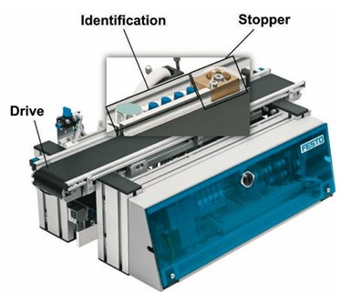
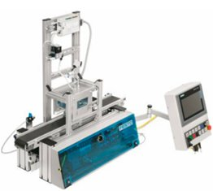
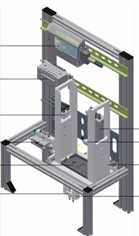
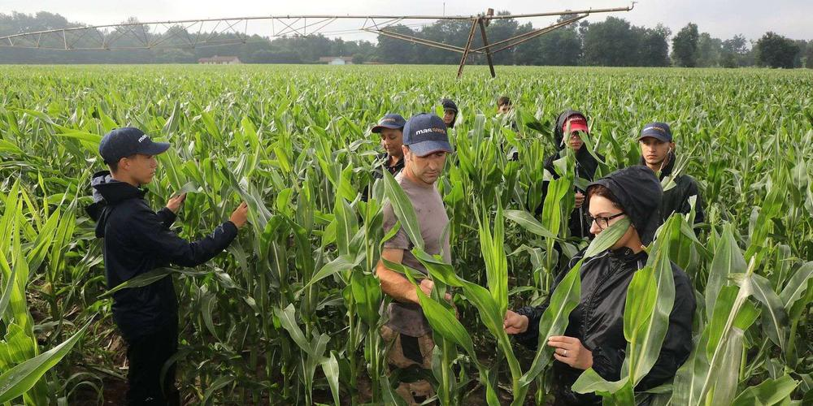
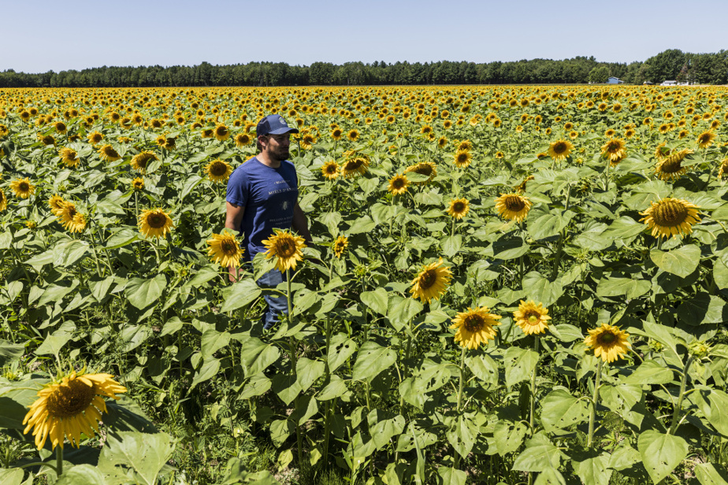
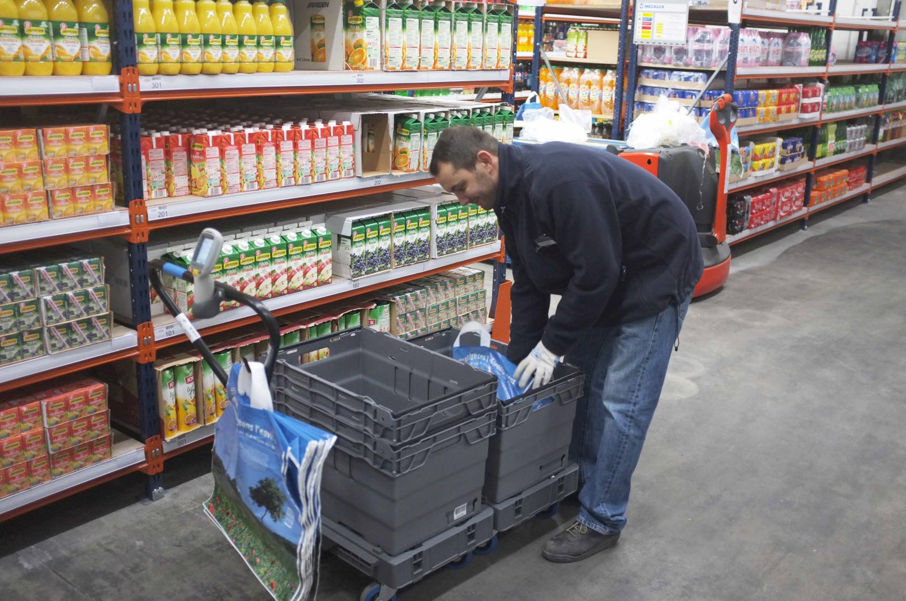

Cursus IUT
Projets académiques
Conception et modélisation d'un kart propulsé par hélice. Travail sur la chaîne d'énergie, la transmission et la commande électronique.
Découvrir →Conception d'un thermomètre électronique pour bain de bébé. Schématique, routage PCB et validation des mesures analogiques.
Découvrir →Système son et lumière synchronisé inspiré du guidage d'avions sur pont d'envol. Programmation et gestion des signaux lumineux et sonores.
Découvrir →Autres projets académiques
Pilotage de plusieurs stations de la ligne de production didactique CPLab FESTO sous TIA Portal : prise en main de l'automate, programmation GRAFCET et gestion des modes de marche et d'arrêt.
En savoir plus →Conception et développement de ce site personnel, pensé comme une vitrine de mon parcours et de mes projets en BUT GEII.
En savoir plus →Programmation d'une plateforme industrielle Festo
La plateforme CPLab FESTO est une ligne de production didactique qui simule un processus industriel réel d'assemblage de coques plastiques encapsulant des dispositifs électroniques. Les pièces sont transportées sur des palettes le long de convoyeurs, chaque station réalisant une tâche précise (stockage, dépose, pressage, étiquetage), avec une identification de chaque pièce assurée par une puce RFID intégrée au porte-palette. Les trois TP suivants, réalisés au fil des semestres du BUT GEII, m'ont permis de programmer plusieurs de ces stations sous l'environnement TIA Portal de Siemens.
TP1 — Prise en main de TIA Portal et pilotage d'une unité de transfert (Semestre 1)
Ce premier TP, réalisé avec Léo Kauss sur l'automate PLCIDRILL, posait les bases de la programmation d'automates industriels. À partir d'un cahier des charges, nous avons conçu un GRAFCET décrivant le pilotage d'un convoyeur (détection de pièce, démarrage, blocage par une butée temporisée, arrêt en fin de course), puis l'avons implémenté successivement dans quatre langages disponibles sous TIA Portal : le LADDER (logique à contacts), le SFC/GRAPH (représentation séquentielle proche du GRAFCET), le SCL (langage textuel structuré proche de Python) et enfin une version LADDER enrichie d'une base de données et de blocs MOVE. Le cahier des charges a ensuite évolué pour intégrer un bouton reset, un arrêt d'urgence, un compteur de cycles et deux modes de fonctionnement (manuel et automatique). Ce TP m'a permis de comparer concrètement plusieurs approches de programmation d'un même comportement séquentiel.

Station de transfert (convoyeur) pilotée lors du TP1 : détection de pièce, démarrage, blocage temporisé, arrêt en fin de course.TP2 — Pilotage de la station de presse pneumatique (Semestre 2)
Ce TP portait sur l'analyse et le pilotage d'une station chargée de clipser deux coques plastiques l'une sur l'autre à l'aide d'un vérin pneumatique double effet. Après une étude des capteurs (détecteur optique à barrière, capteurs magnétiques de position) et du schéma pneumatique (distributeur 5/2 bistable), nous avons établi puis programmé en langage GRAPH un GRAFCET de production normale gérant le convoyage de la palette, la détection de la coque, le pressage temporisé et l'évacuation. La station a ensuite été enrichie d'un GRAFCET de conduite gérant l'arrêt d'urgence et les modes Auto/Manu, avec une cohérence inter-GRAFCET assurée par les propriétés X41/¬X41 des blocs de données.

Station de presse pneumatique pilotée lors du TP2 : le vérin double effet clipse les deux coques de la palette.TP3 — GEMMA et pilotage de la station MACBACK (Semestre 2)
Ce dernier TP visait à piloter la station MACBACK, chargée de déposer automatiquement une coque du dessus sur une palette munie de sa coque du dessous. Après une étude des capteurs à fibre optique et des deux vérins pneumatiques (levage et séparateur de pièces), j'ai réalisé l'étude complète des modes de marche et d'arrêt selon la méthode GEMMA, à partir d'un cahier des charges intégrant un arrêt d'urgence verrouillant une unité anti-chute de sécurité. Cette analyse a ensuite été traduite en GRAFCETs de sécurité, de conduite et de production normale sous TIA Portal, avec les mêmes principes de cohérence inter-GRAFCET que pour le TP2. Ce TP a constitué une montée en compétence par rapport aux précédents, en combinant analyse de sécurité, méthode GEMMA et architecture modulaire de programmation.

Station MACBACK pilotée lors du TP3, pour la dépose automatique d'une coque du dessus sur la palette.Réalisation de ce portfolio
Ce portfolio présente mon parcours en BUT GEII à l'IUT de Bordeaux : les projets académiques réalisés chaque semestre (SAÉ SLR, TDB, KAH), mes projets personnels (montage de PC, hébergement de serveur), et mes expériences professionnelles saisonnières. Une page compétences détaille les savoir-faire développés à travers ces projets — conception électronique, vérification, automatisme, développement web — en les organisant selon les deux familles Concevoir et Vérifier du référentiel BUT GEII. L'ensemble est pensé pour qu'un visiteur puisse naviguer librement entre un aperçu rapide (cartes carrousel) et le détail complet de chaque projet (pages dédiées avec figures, schémas et livrables PDF).
Le site a été conçu et développé entièrement à la main, en HTML, CSS et JavaScript vanilla, sans framework ni outil de génération. Le design repose sur un système de variables CSS (couleurs, typographie, rayons, ombres) qui garantit une cohérence visuelle entre les pages. L'architecture est modulaire : un composant dock de navigation partagé, des cartes carrousel réutilisables, et des modals pour les contenus détaillés. L'accent a été mis sur la lisibilité et l'animation discrète — apparition progressive des sections, pilule de sous-navigation rétractable — plutôt que sur l'accumulation de bibliothèques externes.
Hors cursus
Projets personnels
Choix des composants, assemblage et optimisation : plusieurs configurations montées de A à Z, en fonction d'un budget et d'un usage donnés.
En savoir plus →Mise en place et administration, sur ma propre machine, d'un serveur de jeu permettant à d'autres joueurs de s'y connecter.
En savoir plus →Montage de tours de PC
J'ai monté plusieurs ordinateurs de A à Z, ce qui m'a amené à choisir moi-même chaque composant (carte mère, processeur, carte graphique, alimentation, stockage, refroidissement) en fonction de trois critères principaux : le budget disponible, l'utilisation prévue de la machine (bureautique, gaming, montage vidéo, etc.) et la compatibilité entre les pièces (socket du processeur, format de la carte mère, puissance et connecteurs de l'alimentation, gabarit du boîtier). Cette démarche demande de bien équilibrer les composants entre eux pour éviter qu'une pièce ne bride les performances des autres, tout en respectant l'enveloppe budgétaire fixée.
Au-delà du montage, ces projets m'ont aussi appris à diagnostiquer une panne et à identifier un composant défectueux : démarche par élimination, tests de composants un par un, vérification des branchements et des tensions d'alimentation. Cette capacité à analyser méthodiquement un dysfonctionnement matériel rejoint directement les compétences développées en BUT GEII autour de l'électronique et des systèmes.
Hébergement d'un serveur de jeux en ligne
Dans des jeux comme Minecraft, mais aussi Terraria, Valheim ou encore Project Zomboid, qui proposent tous le même principe de serveur dédié, j'ai téléchargé sur ma propre machine les fichiers nécessaires pour créer et héberger mon propre serveur de jeu. Concrètement, cela consiste à installer le logiciel serveur, configurer le réseau de la machine (ouverture de ports, redirection NAT sur la box internet, éventuellement nom de domaine ou IP fixe) pour le rendre accessible depuis l'extérieur, puis à assurer son administration au quotidien.
Héberger son propre serveur ouvre de nombreuses possibilités par rapport à un serveur officiel : inviter des amis à jouer ensemble sur un monde persistant et entièrement personnalisable, installer des mods ou des plugins pour modifier les règles du jeu, gérer les droits de chaque joueur, programmer des sauvegardes automatiques, et garder un contrôle total sur les performances et la disponibilité du serveur. Cette expérience m'a permis de me familiariser concrètement avec l'administration réseau et système, des compétences qui complètent utilement ma formation en informatique industrielle.
Travaux saisonniers & stages
Expérience professionnelle
Travail saisonnier en plein champ : castrage manuel du maïs semence et contrôle des plants de tournesol pour garantir des croisements de variétés contrôlés.
En savoir plus →Préparation de commandes en ligne, gestion des stocks et chargement client : un poste rythmé qui demande rapidité, organisation et travail d'équipe.
En savoir plus →Castrage de maïs & épuration de tournesol
Castrage du maïs semence
Le castrage du maïs consiste à retirer manuellement la fleur mâle (la panicule, située au sommet du plant) sur les rangs dits « femelles », avant qu'elle ne libère son pollen. L'objectif est d'empêcher toute autofécondation pour garantir un croisement contrôlé entre deux variétés différentes : les rangs femelles, une fois castrés, ne peuvent être fécondés que par le pollen des rangs mâles voisins, volontairement laissés intacts. Cette technique est à la base de la production de maïs semence hybride, qui est ensuite vendu aux agriculteurs pour être ressemé l'année suivante.
Sur l'exploitation où je travaillais, nous étions organisés en équipes de 5 par planche : 4 castreurs avançaient chacun sur un des 4 sillons femelles, retirant la panicule de chaque plant au fil de leur passage, tandis qu'un 5ᵉ équipier jouait le rôle de contrôleur et repassait juste derrière pour vérifier qu'aucune fleur mâle n'avait été oubliée. À côté de ces 4 sillons femelles se trouvaient les sillons mâles, non castrés, qui assuraient la pollinisation. Ce travail demandait de la rigueur et de l'endurance, les journées se déroulant en plein champ sous la chaleur de l'été, avec un passage systématique et rapide sur chaque plant.
Épuration du tournesol semence
L'épuration du tournesol repose sur le même principe que le castrage du maïs : il s'agit de garantir un croisement contrôlé entre deux variétés en empêchant l'autofécondation des plants femelles. Contrairement au maïs, le tournesol ne se castre pas fleur par fleur : le travail consiste à contrôler chaque plant du rang femelle pour vérifier qu'il n'a pas été fécondé par son propre pollen ou par une variété indésirable, et à arracher tout plant non conforme.
Pour le tournesol, chacun contrôlait sa propre planche de 4 sillons mâles, en se plaçant face à la fleur pour bien observer son cœur : il fallait vérifier qu'elle n'avait pas été fécondée, reconnaissable à l'aspect de son disque floral. Si la fleur s'avérait fécondée, le plant devait être arraché entièrement et sorti du champ, exactement selon la même logique que pour le maïs, afin de ne conserver que des plants garantissant la pureté génétique de la future semence. Ce travail minutieux demandait une attention constante et un sens de l'observation, plant après plant, sur l'ensemble de la planche.

Équipe au travail dans les sillons de maïs semence — chaque castreur avance sur son rang femelle.
Contrôle plant par plant dans les rangs de tournesol : vérification du disque floral et arrachage des plants non conformes.Équipier Drive — Carrefour
En tant qu'équipier Drive, ma mission principale consistait à préparer les commandes passées en ligne par les clients : à partir d'un bon de commande affiché sur une tablette ou un terminal, je parcourais les rayons de l'entrepôt pour rassembler chaque article de la liste, en respectant les dates de péremption et en faisant attention à la fragilité de certains produits (fruits, bouteilles, surgelés à conditionner rapidement). Une fois la commande complète, les articles étaient regroupés en bacs et stockés en zone de stockage dans l'attente du retrait par le client.
Ce poste demandait de travailler avec rapidité tout en restant rigoureux, chaque commande étant soumise à un temps de préparation à respecter, ainsi qu'un bon sens de l'organisation pour optimiser ses déplacements dans l'entrepôt et éviter les allers-retours inutiles. Le travail s'effectuait en équipe, avec une répartition des commandes entre équipiers selon les zones du magasin, et nécessitait une communication efficace pour gérer les ruptures de stock ou les produits manquants en proposant des solutions de remplacement. Enfin, au moment du retrait, j'assurais le chargement des commandes dans le coffre des clients directement sur le parking du Drive.

Préparation de commandes en entrepôt : scan article par article, conditionnement en bacs, respect des dates de péremption.